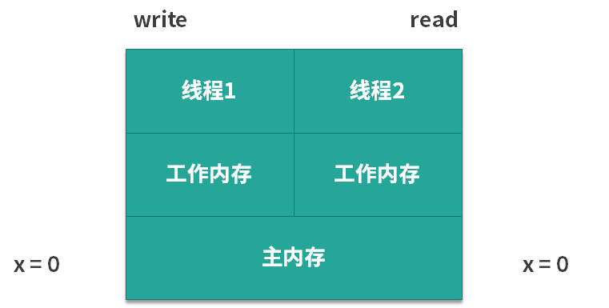
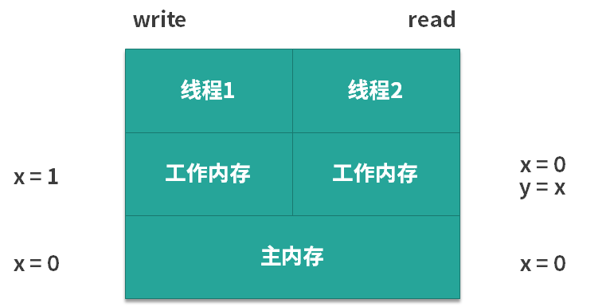
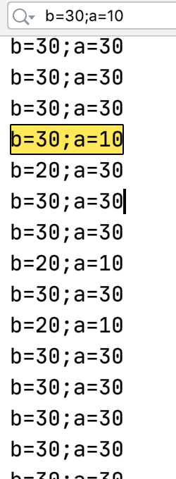

- 00 由点及面，搭建你的 Java 并发知识网.md.html
- 01 为何说只有 1 种实现线程的方法？.md.html
- 02 如何正确停止线程？为什么 volatile 标记位的停止方法是错误的？.md.html
- 03 线程是如何在 6 种状态之间转换的？.md.html
- 04 waitnotifynotifyAll 方法的使用注意事项？.md.html
- 05 有哪几种实现生产者消费者模式的方法？.md.html
- 06 一共有哪 3 类线程安全问题？.md.html
- 07 哪些场景需要额外注意线程安全问题？.md.html
- 08 为什么多线程会带来性能问题？.md.html
- 09 使用线程池比手动创建线程好在哪里？.md.html
- 10 线程池的各个参数的含义？.md.html
- 11 线程池有哪 4 种拒绝策略？.md.html
- 12 有哪 6 种常见的线程池？什么是 Java8 的 ForkJoinPool？.md.html
- 13 线程池常用的阻塞队列有哪些？.md.html
- 14 为什么不应该自动创建线程池？.md.html
- 15 合适的线程数量是多少？CPU 核心数和线程数的关系？.md.html
- 16 如何根据实际需要，定制自己的线程池？.md.html
- 17 如何正确关闭线程池？shutdown 和 shutdownNow 的区别？.md.html
- 18 线程池实现“线程复用”的原理？.md.html
- 19 你知道哪几种锁？分别有什么特点？.md.html
- 20 悲观锁和乐观锁的本质是什么？.md.html
- 21 如何看到 synchronized 背后的“monitor 锁”？.md.html
- 22 synchronized 和 Lock 孰优孰劣，如何选择？.md.html
- 23 Lock 有哪几个常用方法？分别有什么用？.md.html
- 24 讲一讲公平锁和非公平锁，为什么要“非公平”？.md.html
- 25 读写锁 ReadWriteLock 获取锁有哪些规则？.md.html
- 26 读锁应该插队吗？什么是读写锁的升降级？.md.html
- 27 什么是自旋锁？自旋的好处和后果是什么呢？.md.html
- 28 JVM 对锁进行了哪些优化？.md.html
- 29 HashMap 为什么是线程不安全的？.md.html
- 30 ConcurrentHashMap 在 Java7 和 8 有何不同？.md.html
- 31 为什么 Map 桶中超过 8 个才转为红黑树？.md.html
- 32 同样是线程安全，ConcurrentHashMap 和 Hashtable 的区别.md.html
- 33 CopyOnWriteArrayList 有什么特点？.md.html
- 34 什么是阻塞队列？.md.html
- 35 阻塞队列包含哪些常用的方法？add、offer、put 等方法的区别？.md.html
- 36 有哪几种常见的阻塞队列？.md.html
- 37 阻塞和非阻塞队列的并发安全原理是什么？.md.html
- 38 如何选择适合自己的阻塞队列？.md.html
- 39 原子类是如何利用 CAS 保证线程安全的？.md.html
- 40 AtomicInteger 在高并发下性能不好，如何解决？为什么？.md.html
- 41 原子类和 volatile 有什么异同？.md.html
- 42 AtomicInteger 和 synchronized 的异同点？.md.html
- 43 Java 8 中 Adder 和 Accumulator 有什么区别？.md.html
- 44 ThreadLocal 适合用在哪些实际生产的场景中？.md.html
- 45 ThreadLocal 是用来解决共享资源的多线程访问的问题吗？.md.html
- 46 多个 ThreadLocal 在 Thread 中的 threadlocals 里是怎么存储的？.md.html
- 47 内存泄漏——为何每次用完 ThreadLocal 都要调用 remove()？.md.html
- 48 Callable 和 Runnable 的不同？.md.html
- 49 Future 的主要功能是什么？.md.html
- 50 使用 Future 有哪些注意点？Future 产生新的线程了吗？.md.html
- 51 如何利用 CompletableFuture 实现“旅游平台”问题？.md.html
- 52 信号量能被 FixedThreadPool 替代吗？.md.html
- 53 CountDownLatch 是如何安排线程执行顺序的？.md.html
- 54 CyclicBarrier 和 CountdownLatch 有什么异同？.md.html
- 55 Condition、object.wait() 和 notify() 的关系？.md.html
- 56 讲一讲什么是 Java 内存模型？.md.html
- 57 什么是指令重排序？为什么要重排序？.md.html
- 58 Java 中的原子操作有哪些注意事项？.md.html
- 59 什么是“内存可见性”问题？.md.html
- 60 主内存和工作内存的关系？.md.html
- 61 什么是 happens-before 规则？.md.html
- 62 volatile 的作用是什么？与 synchronized 有什么异同？.md.html
- 63 单例模式的双重检查锁模式为什么必须加 volatile？.md.html
- 64 你知道什么是 CAS 吗？.md.html
- 65 CAS 和乐观锁的关系，什么时候会用到 CAS？.md.html
- 66 CAS 有什么缺点？.md.html
- 67 如何写一个必然死锁的例子？.md.html
- 68 发生死锁必须满足哪 4 个条件？.md.html
- 69 如何用命令行和代码定位死锁？.md.html
- 70 有哪些解决死锁问题的策略？.md.html
- 71 讲一讲经典的哲学家就餐问题.md.html
- 72 final 的三种用法是什么？.md.html
- 73 为什么加了 final 却依然无法拥有“不变性”？.md.html
- 74 为什么 String 被设计为是不可变的？.md.html
- 75 为什么需要 AQS？AQS 的作用和重要性是什么？.md.html
- 76 AQS 的内部原理是什么样的？.md.html
- 77 AQS 在 CountDownLatch 等类中的应用原理是什么？.md.html
- 78 一份独家的 Java 并发工具图谱.md.html
59 什么是“内存可见性”问题？
本课时我们主要讲解什么是“可见性”问题？
我们先从两个案例来入手，看一看什么是可见性问题。
案例一
我们来看看下面的代码，有一个变量 x，它是 int 类型的，如下所示：
public class Visibility {
int x = 0;
public void write() {
x = 1;
}
public void read() {
int y = x;
}
}
这是一段很简单的代码，类中有两个方法：
- write 方法，作用是给 x 赋值，代码中，把 x 赋值为 1，由于 x 的初始值是 0，所以执行 write 方法相当于改变了 x 的值；
- read 方法，作用是把 x 读取出来，读取的时候我们用了一个新的 int 类型变量的 y 来接收 x 的值。
我们假设有两个线程来执行上述代码，第 1 个线程执行的是 write 方法，第 2 个线程执行的是 read 方法。下面我们来分析一下，代码在实际运行过程中的情景是怎么样的，如下图所示：

在图中可以看出，由于 x 的初始值为 0，所以对于左边的第 1 个线程和右边的第 2 个线程而言，它们都可以从主内存中去获取到这个信息，对两个线程来说 x 都是 0。可是此时我们假设第 1 个线程先去执行 write 方法，它就把 x 的值从 0 改为了 1，但是它改动的动作并不是直接发生在主内存中的，而是会发生在第 1 个线程的工作内存中，如下图所示。

那么，假设线程 1 的工作内存还未同步给主内存，此时假设线程 2 开始读取，那么它读到的 x 值不是 1，而是 0，也就是说虽然此时线程 1 已经把 x 的值改动了，但是对于第 2 个线程而言，根本感知不到 x 的这个变化，这就产生了可见性问题。
案例二
下面我们再来看一个案例。在如下所示的代码中，有两个变量 a 和 b， 并且把它们赋初始值为 10 和 20。
/**
* 描述： 演示可见性带来的问题
*/
public class VisibilityProblem {
int a = 10;
int b = 20;
private void change() {
a = 30;
b = a;
}
private void print() {
System.out.println("b=" + b + ";a=" + a);
}
public static void main(String[] args) {
while (true) {
VisibilityProblem problem = new VisibilityProblem();
new Thread(new Runnable() {
@Override
public void run() {
try {
Thread.sleep(1);
} catch (InterruptedException e) {
e.printStackTrace();
}
problem.change();
}
}).start();
new Thread(new Runnable() {
@Override
public void run() {
try {
Thread.sleep(1);
} catch (InterruptedException e) {
e.printStackTrace();
}
problem.print();
}
}).start();
}
}
}
在类中，有两个方法：
- change 方法，把 a 改成 30，然后把 b 赋值为 a 的值；
- print 方法，先打印出 b 的值，然后再打印出 a 的值。
接下来我们来看一下 main 函数，在 main 函数中同样非常简单。首先有一个 while 的死循环，在这个循环中，我们新建两个线程，并且让它们先休眠一毫秒，然后再分别去执行 change 方法和 print 方法。休眠一毫秒的目的是让它们执行这两个方法的时间，尽可能的去靠近。
下面我们运行这段代码并分析一下可能出现的情况。
- 第 1 种情况：是最普通的情况了。假设第 1 个线程，也就是执行 change 的线程先运行，并且运行完毕了，然后第 2 个线程开始运行，那么第 2 个线程自然会打印出 b = 30;a = 30 的结果。
- 第 2 种情况：与第 1 种情况相反。因为线程先 start，并不代表它真的先执行，所以第 2 种情况是第 2 个线程先打印，然后第 1 个线程再去进行 change，那么此时打印出来的就是 a 和 b 的初始值，打印结果为 b = 20;a = 10。
- 第 3 种情况：它们几乎同时运行，所以会出现交叉的情况。比如说当第 1 个线程的 change 执行到一半，已经把 a 的值改为 30 了，而 b 的值还未来得及修改，此时第 2 个线程就开始打印了，所以此时打印出来的 b 还是原始值 20，而 a 已经变为了 30， 即打印结果为 b = 20;a = 30。
这些都很好理解，但是有一种情况不是特别容易理解，那就是打印结果为 b = 30;a = 10，我们来想一下，为什么会发生这种情况？
- 首先打印出来的是 b = 30，这意味着 b 的值被改变了，也就是说 b = a 这个语句已经执行了；
- 如果 b = a 要想执行，那么前面 a = 30 也需要执行，此时 b 才能等于 a 的值，也就是 30；
- 这也就意味着 change 方法已经执行完毕了。
可是在这种情况下再打印 a，结果应该是 a = 30，而不应该打印出 a = 10。因为在刚才 change 执行的过程中，a 的值已经被改成 30 了，不再是初始值的 10。所以，如果出现了打印结果为 b = 30;a = 10 这种情况，就意味着发生了可见性问题：a 的值已经被第 1 个线程修改了，但是其他线程却看不到，由于 a 的最新值却没能及时同步过来，所以才会打印出 a 的旧值。发生上述情况的几率不高。我把发生时的截屏用图片的形式展示给你看看，如下所示：

解决问题
那么我们应该如何避免可见性问题呢？在案例一中，我们可以使用 volatile 来解决问题，我们在原来的代码的基础上给 x 变量加上 volatile 修饰，其他的代码不变。加了 volatile 关键字之后，只要第 1 个线程修改完了 x 的值，那么当第 2 个线程想读取 x 的时候，它一定可以读取到 x 的最新的值，而不可能读取到旧值。
同理，我们也可以用 volatile 关键字来解决案例二的问题，如果我们给 a 和 b 加了 volatile 关键字后，无论运行多长时间，也不会出现 b = 30;a = 10 的情况，这是因为 volatile 保证了只要 a 和 b 的值发生了变化，那么读取的线程一定能感知到。
能够保证可见性的措施
除了 volatile 关键字可以让变量保证可见性外，synchronized、Lock、并发集合等一系列工具都可以在一定程度上保证可见性，具体保证可见性的时机和手段，我将在第 61 课时 happens-before 原则中详细展开讲解。
synchronized 不仅保证了原子性，还保证了可见性
下面我们再来分析一下之前所使用过的 synchronized 关键字，在理解了可见性问题之后，相信你对 synchronized 的理解会更加深入。
关于 synchronized 这里有一个特别值得说的点，我们之前可能一致认为，使用了 synchronized 之后，它会设立一个临界区，这样在一个线程操作临界区内的数据的时候，另一个线程无法进来同时操作，所以保证了线程安全。
其实这是不全面的，这种说法没有考虑到可见性问题，完整的说法是：synchronized 不仅保证了临界区内最多同时只有一个线程执行操作，同时还保证了在前一个线程释放锁之后，之前所做的所有修改，都能被获得同一个锁的下一个线程所看到，也就是能读取到最新的值。因为如果其他线程看不到之前所做的修改，依然也会发生线程安全问题。
以上就是本课时的内容了。在本课时中，我们首先给出了两个具体案例来介绍什么是可见性问题；然后介绍了解决可见性问题的方法，最常用的就是使用 volatile 关键字；最后我们对 synchronized 的理解从可见性的层面上加深了一步。